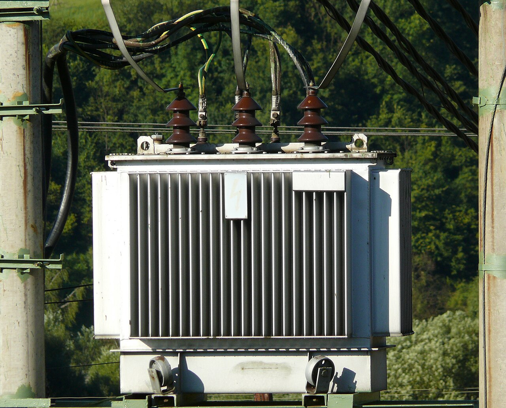

Education
B.Eng. Electrical Engineering, King Mongkut’s Institute of Technology Ladkrabang (KMITL), 2023 - expected 2027. GPA 2.46.
ELECTRICAL ENGINEERING STUDENT
I am a third-year Electrical Engineering student at KMITL. I have learned about power systems, motor-drive circuits, and electrical site work through university projects and internships.
View my projects
SHOWCASE
B.Eng. Electrical Engineering, King Mongkut’s Institute of Technology Ladkrabang (KMITL), 2023 - expected 2027. GPA 2.46.
AutoCAD, DIALux, BEC Software, Python, C with Arduino, MATLAB, Microsoft Office, electrical drawings, and blueprints.
Electrical Engineering Intern with EGAT engineering teams and a Data Center construction project, focusing on power systems and site operations.
SELECTED PROJECTS

Designed and assembled a motor-drive test bench with power electronics, gate drivers, microcontrollers, protection circuits, and variable AC-voltage testing.

Co-designed and constructed a functional transformer, applying copper coil winding calculations, magnetic circuit design, and efficiency testing.
Reference image: Jaroslaw Kruk / Wikimedia Commons (CC BY-SA).
FIELD EXPERIENCE

Inspected, measured, and connected copper busbars inside Main Distribution Boards while observing electrical safety and power distribution work.

Studied single-line diagrams, substations, high-voltage transmission networks, transformers, and safety standards with EGAT engineers.
CONTACT
Thai (native) · English (B2 CEFR) · kawinphetchoowaree@gmail.com · 080-8878701